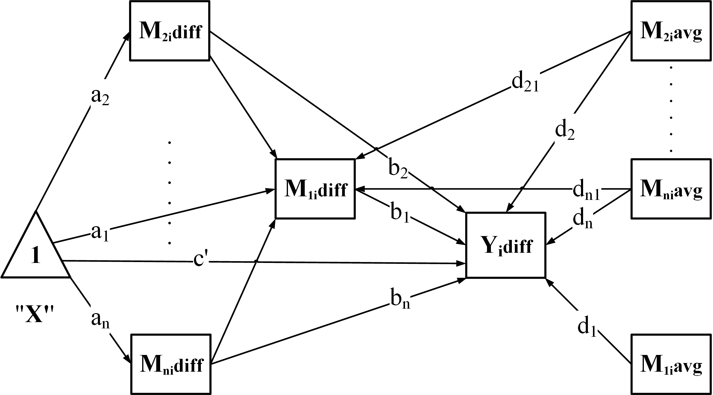

The wsMed function is designed for two condition within-subject mediation analysis, incorporating SEM models through the lavaan package and Monte Carlo simulation methods. This document provides a detailed description of the function’s parameters, workflow, and usage, along with an example demonstration.
Installation
You can install the development version of wsMed from GitHub with:
# install.packages("pak")
pak::pak("Yangzhen1999/wsMed")Alternatively, if you prefer using devtools, you can install wsMed as follows:
# install.packages("devtools")
devtools::install_github("Yangzhen1999/wsMed")Example
This is a basic example which shows you how to solve a common problem:
library(wsMed)
# Load example data
data(example_data)
set.seed(123)
example_dataN <- mice::ampute(
data = example_data,
prop = 0.1,
)$amp
# Perform within-subject mediation analysis (Parallel mediation model)
result <- wsMed(
data = example_dataN, #dataset
M_C1 = c("A1","B1"), # A1/B1 is A/B mediator variable in condition 1
M_C2 = c("A2","B2"), # A2/B2 is A/B mediator variable in condition 2
Y_C1 = "C1", # C1 is outcome variable in condition 1
Y_C2 = "C2", # C2 is outcome variable in condition 2
form = "P", # Parallel mediation
C_C1 = "D1", # within-subject covariate (e.g., measured under D1)
C_C2 = "D2", # within-subject covariate (e.g., measured under C2)
C = "D3", # between-subject covariates
Na = "MI", # Use multiple imputation for missing data
standardized = TRUE, # Request standardized path coefficients and effects
)
# Print summary results
print(result)Main Function Overview
The wsMed() function automates the full workflow for two-condition within-subject mediation analysis. Its main steps are:
Validate inputs – check dataset structure, mediation model type (
form), and missing-data settings.Prepare data – compute difference scores (
Mdiff,Ydiff) and centered averages (Mavg) from the two-condition variables.-
Build the model – generate SEM syntax according to the chosen structure:
-
"P": Parallel mediation
-
"CN": Chained / serial mediation
-
"CP": Chained + Parallel
-
"PC": Parallel + Chained
-
-
Fit the model – estimate parameters while handling missing data:
-
"DE": listwise deletion -
"FIML": full-information ML -
"MI": multiple imputation
-
-
Compute inference – provide confidence intervals using:
-
Bootstrap (
ci_method = "bootstrap") -
Monte Carlo (
ci_method = "mc")
-
Bootstrap (
Optional: Standardization – if
standardized = TRUE, return standardized effects with CIs.-
Optional: Covariates – automatically center and include:
-
Between-subject covariates (
C): mean-centered and added to all regressions. -
Within-subject covariates (
C_C1,C_C2): difference scores and centered averages are computed and included.
-
Between-subject covariates (